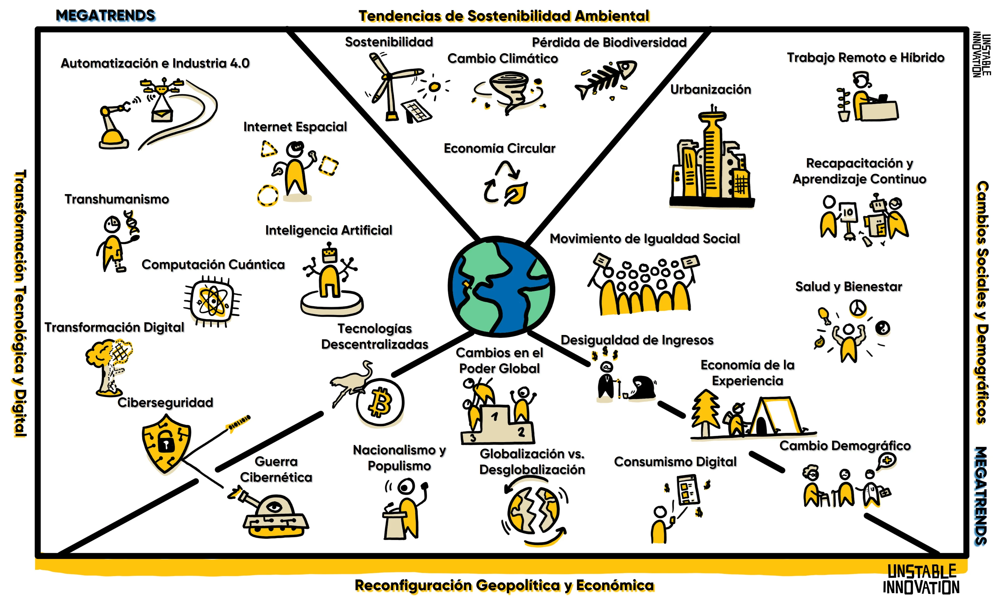

Las cuatro megatendencias que están dando forma a la próxima década. Originalmente enmarcadas en Innovación Inestable y actualizadas anualmente.

Cuatro categorías encapsulan las fuerzas que están transformando todo aspecto de nuestro mundo privado y de negocios. Se superponen, se componen y se remodelan entre sí.
La tecnología está remodelando el mundo más rápido que nunca. La IA y la automatización son las fuerzas principales del cambio. Estas tecnologías prometen revolucionar nuestra visión de todo en formas que apenas comenzamos a entender. Incluye: Inteligencia Artificial, Automatización e Industria 4.0, Transformación Digital, Ciberseguridad, Computación Cuántica, Tecnologías Descentralizadas (Bitcoin, NOSTR), Transhumanismo, e Internet Espacial (AR/VR).
Las preocupaciones ambientales están en lo más alto de las agendas globales. Estamos contaminando nuestro planeta y necesitamos reducir huellas de carbono, residuos y consumo de recursos. Incluye: Cambio Climático, Sostenibilidad, Economía Circular, y Pérdida de Biodiversidad.
Las sociedades en todo el mundo están atravesando profundos cambios acelerados por los avances tecnológicos y la economía global. Incluye: Cambio Demográfico, Movimientos por la Igualdad Social, Urbanización, Salud y Bienestar, Trabajo Remoto e Híbrido, y Reskilling y Aprendizaje Permanente.
Los órdenes políticos y económicos del mundo fluctúan mientras los países intentan predecir el cambio rápido. El poder se desplaza hacia economías emergentes. Incluye: Globalización vs. Desglobalización, Desigualdad de Ingresos, Cambios en el Poder Global, Nacionalismo y Populismo, Guerra Cibernética, Economía de la Experiencia, y Consumismo Digital.
Las megatendencias son el contexto; los capítulos de Innovación Inestable son cómo actuar dentro de ese contexto.